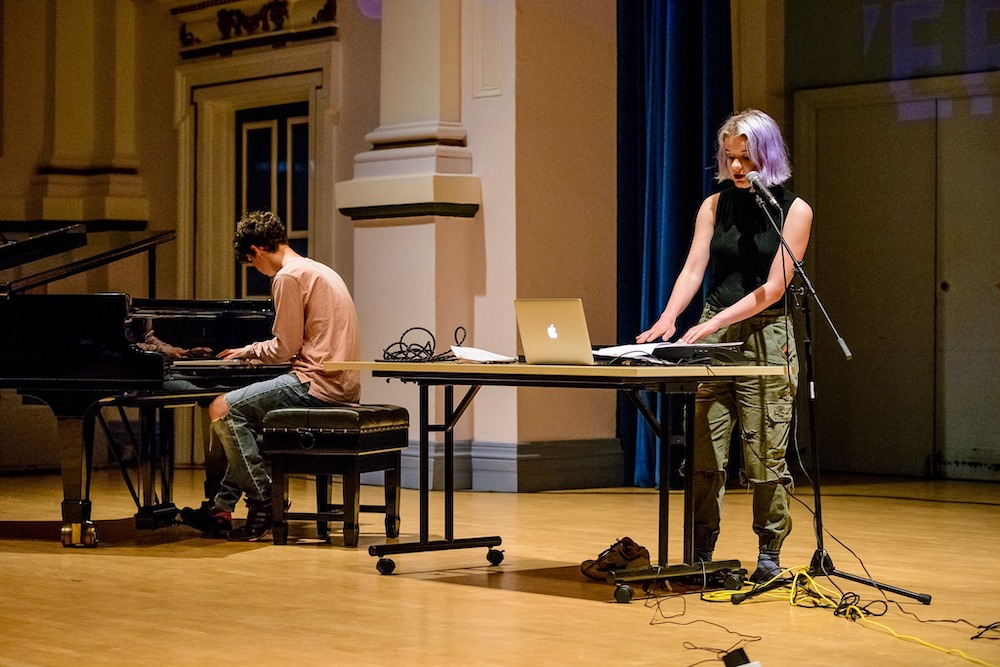

IRL

IRL was my second collaboration with Pussy Stamina but instead was performed and improvised with pianist Oscar Richardson (whom I would like to give credit to for wonderfully transforming the piece). The piece explores the idea of internet trolling from two opposing perspectives. It is performed with piano, spoken word and a sampler.

Click here to watch a performance (at 28:04)
Photos by Ben Hutchinson Photography